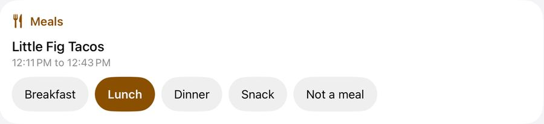
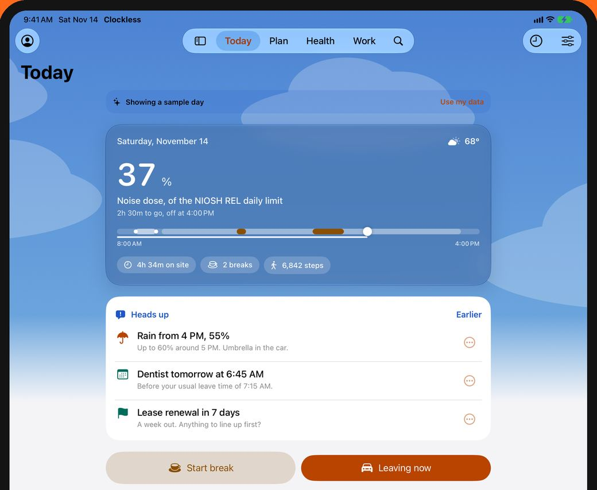
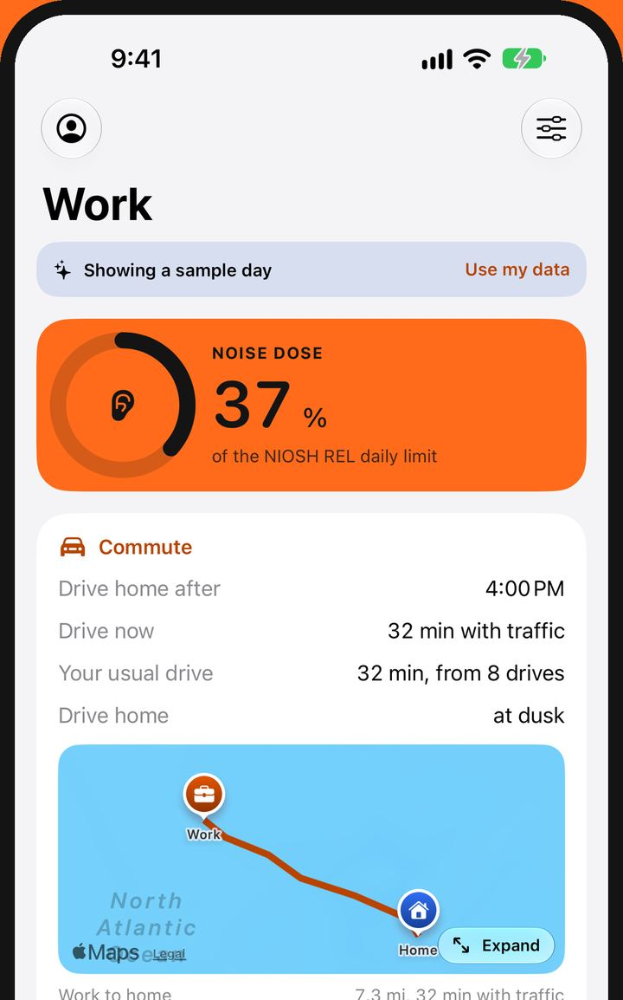
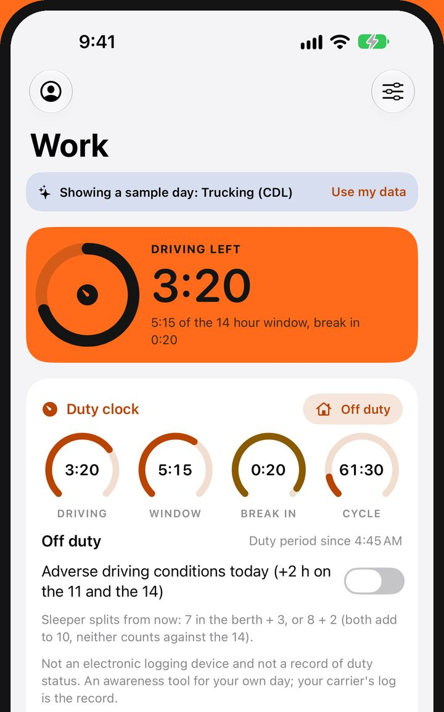
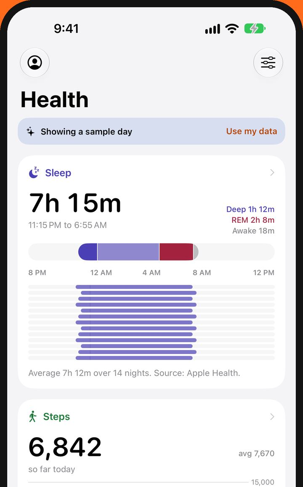

7:51AM
Arrived at work
No clocking in.
Leaving home, getting to work, leaving work and getting home are logged from the home and work places you set. Your drives come from the iPhone's motion sensors.
Plan shows your day as a timeline. What you planned shows up as hollow marks, and what actually happened fills in at the real time.
10:00AM
Break (logged)
A stop during your shift counts as a break.
The places you stop are named from Apple Maps.
Break (logged)15 min away12:11PM
Little Fig Tacos
A stop around mealtime asks one question.
Was it breakfast, lunch or dinner?

1:30PM
2h 30m to go
Today is one screen for your whole day.
- When to leave
- Live drive time with traffic
- Your shift on a bar
- Breaks
- Meals
- The weather
- Your next calendar event
- How you slept
- Your steps so far

There are also Home Screen and Lock Screen widgets, a leave-by countdown as a Live Activity, a Leaving now button in Control Center, and reminders for when to leave and when to go for a walk.
37%
Noise dose, of the NIOSH REL daily limit
Made for your kind of work.
Pick your job and the Work page shows the numbers that matter for it, along with the published rule each one comes from.
Loud floorNoise dose, against the NIOSH limit. 
Trucking (CDL)A duty clock from your drives.For your own awareness. Not an ELD. 
- Data center, industrial floor, trades
- Noise dose from Apple Watch readings against the NIOSH or OSHA limit, hours on site, breaks and heat.
- Rideshare and gig delivery
- Business miles for each drive at that day's IRS standard rate.
- Trucking (CDL)
- A duty clock built from your drives and your taps, covering 11 hours of driving, the 14-hour window, the 30-minute break, the 60/70-hour cycle and sleeper splits, shown as a Live Activity.It's there to help you keep track of your own day. It is not an electronic logging device and not a record of duty status.
- Retail and food service
- Hours on your feet, time between shifts, heat in the kitchen.
- Outdoor work
- Heat index and UV at your site.
- Office
- Sitting time and meeting load.
- Healthcare and first responders
- Sleep against your shift.
4:00PM
Not logged: Left work.
It's upfront about what it caught.
Every time comes from one of three things:
- A place you set up
- A drive your phone noticed
- A stop it saw
Why was this missed?
Trip logging is off, so leaving and arriving are not logged. Turn it on in Profile, under Places and drives.
If a time is missing, the day's log tells you why and lets you add it yourself.
4:32PM
Home
Your log stays on your phone.
- No account
- No ads
- No analytics
- No tracking
Health data from HealthKit is only read, never sent anywhere. The optional daily history stays on your device and out of iCloud. Only weather, drive-time and place lookups go to Apple.
11:15PM
Last night
Your sleep, next to your day.
Health reads from Apple Health through HealthKit: last night's sleep with its stages, steps, heart, walks on a map, and mood.

Tomorrow, it logs itself again.
Want to look around first? Go to Profile and choose Show a sample day.